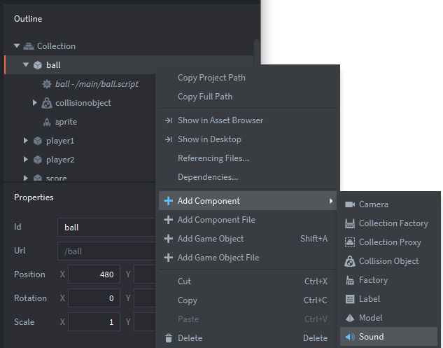
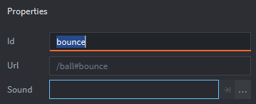
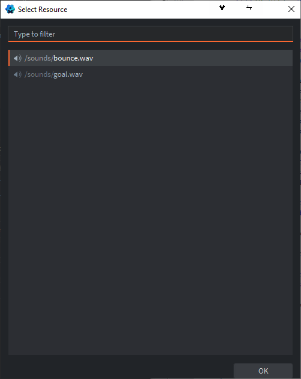
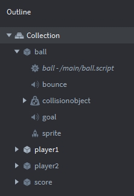

Tutorials for 2D games projects
Pong | Creating sound objects.
There are many approaches we could take to playing the sounds in the game. We could create a sound game object and then pass messages to it from the other objects when a sound is to be played. However, since all sounds are triggered by the ball, either when it bounces or when a goal is scored it is easier to put the sound triggers with the ball object.
- In the assets panel, double click 'main.collection' in the 'main' folder.
- In the outline panel, right click the ball game object and select, 'Add Component', 'Sound'.

- In the properties panel, change the 'Id' property of the sound to, 'bounce'. This is the identifier we will use later in the code to trigger this sound object.

- In the properties panel, change the 'Sound' property by clicking the three dots (...). From the dialog box, choose, '/sounds/bounce.wav' and click 'OK'.

- Now repeat the steps to add a second sound to the ball object for the goal sound. Set the 'Id' of this sound object to be, 'goal'.
Once this is complete, the outline panel should look like this for the ball game object:

- Save the changes by pressing CTRL-S or 'File', 'Save All'.
Now the sounds are set up the next step is to trigger them in the code. Stage 9c >
 Craig'n'Dave | Version 1.3
Craig'n'Dave | Version 1.3